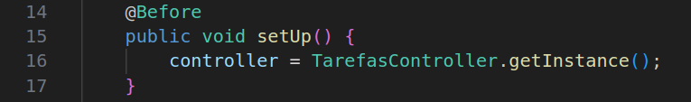

(testPostTarefa())testPostTarefaFalha()testConcluirTarefa()testGetTarefas()testGetTarefaById()testGetTarefaByIdInvalido()testRemoverTarefa()testRemoverTarefaInvalida()testAtualizarTarefa()testAtualizarTarefaInvalida()Este documento explicita os casos de testes executados no componente TarefasController o qual simula a porta de entrada das requisições das aplicações web, nesse sentido, os Testes Unitários automatizados foram elaborados em concordância aos endpoints da classe.
Vale a pena ressaltar que, para a execução dos testes no geral, é necessário configurar minimamente o projeto para a execução dos testes, o qual pode ser feitas de várias estratégias:
Baixar a Lib do Junit .jar (no site oficial) e configurar as paths de Teste e de desenvolvimento do código para que o Java e a IDE (caso atual - VScode) estejam em harmonia e executar os testes manualmente, utilizando a biblioteca JUnit previamente adicionada ao repositório local.
Configurar o Projeto via Maven - estratégia aplicada no contexto atual, que consiste em:
Instalar o Maven na máquina
Criar o pom.xml com toda a configuração do projeto e, além disso, as
dependências JUnit 4.13.2 e Hamcrest 1.3 para realizar os testes, demais
configurações inerentes ao projeto (compilação e etc). Com isso, teremos algo semelhante a
isso:
<project xmlns="http://maven.apache.org/POM/4.0.0" xmlns:xsi="http://www.w3.org/2001/XMLSchema-instance"
xsi:schemaLocation="http://maven.apache.org/POM/4.0.0 http://www.apache.org/xsd/maven-4.0.0.xsd">
<modelVersion>4.0.0</modelVersion>
<groupId>com.example</groupId>
<artifactId>Sistema_de_Gerenciamento_de_Tarefas</artifactId>
<version>1.0-SNAPSHOT</version>
<dependencies>
<!-- JUnit para testes -->
<dependency>
<groupId>junit</groupId>
<artifactId>junit</artifactId>
<version>4.13.2</version>
<scope>test</scope>
</dependency>
<!-- Hamcrest para asserções -->
<dependency>
<groupId>org.hamcrest</groupId>
<artifactId>hamcrest-core</artifactId>
<version>1.3</version>
<scope>test</scope>
</dependency>
</dependencies>
<build>
<sourceDirectory>src/main/java</sourceDirectory>
<testSourceDirectory>src/test/java</testSourceDirectory>
<plugins>
<!-- Plugin para compilar o código -->
<plugin>
<groupId>org.apache.maven.plugins</groupId>
<artifactId>maven-compiler-plugin</artifactId>
<version>3.8.1</version>
<configuration>
<source>11</source>
<target>11</target>
</configuration>
</plugin>
</plugins>
</build>
</project>
Configuração do patch ambiente do projeto no Vscode, se não houverão erros de estruturação de
Repositório e identificação de bibliotecas. Isso é feito criando a pasta
.vscode na raiz do projeto contendo o
settings.json com as seguintes descrições:
{
"java.home": "/usr/lib/jvm/jdk-23.0.1-oracle-x64", // Ajuste para o caminho do seu JDK
"java.project.sourcePaths": ["src/main/java"], // Diretório de código-fonte principal no padrão Maven
"java.project.test.sourcePaths": ["src/test/java"], // Diretório de código-fonte de testes no padrão Maven
"java.project.outputPath": "target/classes", // Diretório de saída padrão do Maven
"java.project.referencedLibraries": [
"target/dependency/*.jar"
],
"java.testClass": [
"controller.TarefasControllerTest" // Classe de teste a ser executada
],
"java.testMethod": [
"controller.TarefasControllerTest#testPostTarefa", // Método de teste específico
"controller.TarefasControllerTest#testConcluirTarefa" // Outro método de teste
],
}
Após essas configurações iniciais, só executar uma compilação inicial executando o comando
mvnw compile no terminal para garantir o download das libs, configuração dos
targets com as versões binárias dos códigos, e toda a configuração do projeto explícita no
pom.xml.
Com tudo configurado e compilado, e as libs em pleno funcionamento, é só modelar os casos de testes.
Para a execução de cada teste, é necessário instanciar o controller de tarefas para a realização de cada teste, uma vez que, antes da execução, o Junit precisa saber sob qual componente será efetuado as validações. Sendo assim, o seguinte método será executado antes dos testes para instanciar o controller:

(testPostTarefa()) Identificação Única: CT1.
Objetivo do Teste: Validar se o cadastro de tarefa foi executado corretamente.
Passos para Execução:
postTarefa.findbyId(...) do
controller.Critérios de Aceitação: A Tarefa deve ser cadastrada com sucesso, com todos os atributos válidos.
testPostTarefaFalha() Identificação Única: CT2.
Objetivo do Teste: Verificar se o sistema lança exceção ao tentar cadastrar uma tarefa com
título e descrição inválidos.
Passos para Execução:
postTarefa.IllegalArgumentException.Critérios de Aceitação:
O sistema deve lançar uma exceção com "O título da tarefa não pode ser nulo ou vazio."
impedindo o cadastro da tarefa inválida.
testConcluirTarefa() Identificação Única: CT3.
Objetivo do Teste: Validar se uma tarefa é marcada como concluída com sucesso.
Passos para Execução:
postTarefa.concluirTarefa.isConcluida().Critérios de Aceitação:
A tarefa deve estar com status de concluída.
testGetTarefas() Identificação Única: CT4.
Objetivo do Teste: Validar se a listagem de tarefas está funcionando corretamente,
retornando todas as cadastradas.
Passos para Execução:
getlistTarefas.Critérios de Aceitação:
Os títulos das tarefas cadastradas devem estar presentes na string de retorno.
testGetTarefaById() Identificação Única: CT5.
Objetivo do Teste: Confirmar se a tarefa cadastrada pode ser localizada corretamente pelo
ID.
Passos para Execução:
getIdlocal().findById com esse ID.Critérios de Aceitação:
A tarefa retornada deve ser equivalente à tarefa cadastrada.
testGetTarefaByIdInvalido() Identificação Única: CT6.
Objetivo do Teste: Validar se o sistema reage corretamente ao tentar buscar uma tarefa com
ID inexistente.
Passos para Execução:
findById com um ID inexistente (ex: 999).Critérios de Aceitação:
O sistema deve lançar uma exceção do tipo IllegalArgumentException com "Tarefa não
encontrada com o ID 999".
testRemoverTarefa() Identificação Única: CT7.
Objetivo do Teste: Validar se uma tarefa pode ser removida corretamente após ser
cadastrada.
Passos para Execução:
postTarefa.deleteTarefa passando a tarefa como parâmetro.findById.Critérios de Aceitação:
A tarefa deve ser removida com sucesso e não pode ser localizada posteriormente indicando que,
"Tarefa não encontrada com o ID 1".
testRemoverTarefaInvalida() Identificação Única: CT8.
Objetivo do Teste: Verificar se o sistema reage corretamente ao tentar remover uma tarefa
que nunca foi cadastrada.
Passos para Execução:
deleteTarefa com essa instância.Critérios de Aceitação:
O sistema deve lançar uma exceção IllegalArgumentException indicando que, "A tarefa com
o ID 1 não existe.".
testAtualizarTarefa() Identificação Única: CT9.
Objetivo do Teste: Validar se os dados de uma tarefa existente podem ser atualizados
corretamente.
Passos para Execução:
titulo).putTarefa.findById.Critérios de Aceitação:
A tarefa deve refletir os novos dados após a atualização.
testAtualizarTarefaInvalida() Identificação Única: CT10.
Objetivo do Teste: Verificar se o sistema lança exceção ao tentar atualizar uma tarefa que
não foi previamente cadastrada.
Passos para Execução:
putTarefa.Critérios de Aceitação:
O sistema deve lançar uma exceção IllegalArgumentException indicando que, "A tarefa com
o ID 1 não está cadastrada.".
import static org.junit.Assert.*;
import controller.TarefasController;
import model.Prioridade;
import model.Tarefa;
import org.junit.Before;
import org.junit.Test;
public class TarefasControllerTest {
private TarefasController controller;
@Before
public void setUp() {
controller = TarefasController.getInstance();
}
@Test
public void testPostTarefa() {
Tarefa tarefa = new Tarefa("Tarefa1", "Teste", Prioridade.ALTA);
String resultado = controller.postTarefa(tarefa);
// Verifica se a saída do método contém a tarefa recém cadastrada
assertTrue(resultado.contains("Tarefa1"));
// Busca pela tarefa e verifica se ela foi armazenada corretamente
Tarefa tarefaSalva = controller.findById(tarefa.getIdlocal());
assertNotNull(tarefaSalva); // Verifica se a tarefa existe
assertEquals("Tarefa1", tarefaSalva.getTitulo()); // Verifica se o título corresponde
}
@Test(expected = IllegalArgumentException.class)
public void testPostTarefaFalha() {
// Tenta criar uma tarefa com título e descrição inválidos
Tarefa tarefa = new Tarefa("", "", Prioridade.ALTA);
controller.postTarefa(tarefa); // Espera-se que uma IllegalArgumentException seja lançada
}
@Test
public void testConcluirTarefa() {
Tarefa tarefa = new Tarefa("Tarefa", "Teste", Prioridade.ALTA);
controller.postTarefa(tarefa);
controller.concluirTarefa(tarefa);
assertTrue(controller.findById(tarefa.getIdlocal()).isConcluida());
}
@Test
public void testGetTarefas() {
Tarefa tarefa1 = new Tarefa("Tarefa1", "Descrição1", Prioridade.ALTA);
Tarefa tarefa2 = new Tarefa("Tarefa2", "Descrição2", Prioridade.BAIXA);
controller.postTarefa(tarefa1);
controller.postTarefa(tarefa2);
// Verifica o tamanho da lista de tarefas
String listaTarefas = controller.getlistTarefas();
assertTrue(listaTarefas.contains("Tarefa1"));
assertTrue(listaTarefas.contains("Tarefa2"));
}
@Test
public void testGetTarefaById() {
Tarefa tarefa = new Tarefa("Tarefa1", "Teste", Prioridade.ALTA);
controller.postTarefa(tarefa);
assertEquals(tarefa, controller.findById(tarefa.getIdlocal()));
}
@Test(expected = IllegalArgumentException.class)
public void testGetTarefaByIdInvalido() {
controller.findById(999); // Espera-se que a tarefa com ID 999 não exista
}
@Test(expected = IllegalArgumentException.class)
public void testRemoverTarefa() {
Tarefa tarefa = new Tarefa("Tarefa1", "Teste", Prioridade.ALTA);
controller.postTarefa(tarefa);
controller.deleteTarefa(tarefa);
assertNull(controller.findById(tarefa.getIdlocal())); // Verifica se a tarefa foi removida
}
@Test(expected = IllegalArgumentException.class)
public void testRemoverTarefaInvalida() {
Tarefa tarefa = new Tarefa("Tarefa1", "Teste", Prioridade.ALTA);
controller.deleteTarefa(tarefa); // Tenta deletar uma tarefa que não foi cadastrada
}
@Test
public void testAtualizarTarefa() {
Tarefa tarefa = new Tarefa("Tarefa1", "Teste", Prioridade.ALTA);
controller.postTarefa(tarefa);
tarefa.setTitulo("Tarefa Atualizada");
controller.putTarefa(tarefa);
assertEquals("Tarefa Atualizada", controller.findById(tarefa.getIdlocal()).getTitulo());
}
@Test(expected = IllegalArgumentException.class)
public void testAtualizarTarefaInvalida() {
Tarefa tarefa = new Tarefa("Tarefa1", "Teste", Prioridade.ALTA);
controller.putTarefa(tarefa); // Tenta atualizar uma tarefa que não foi cadastrada
}
}